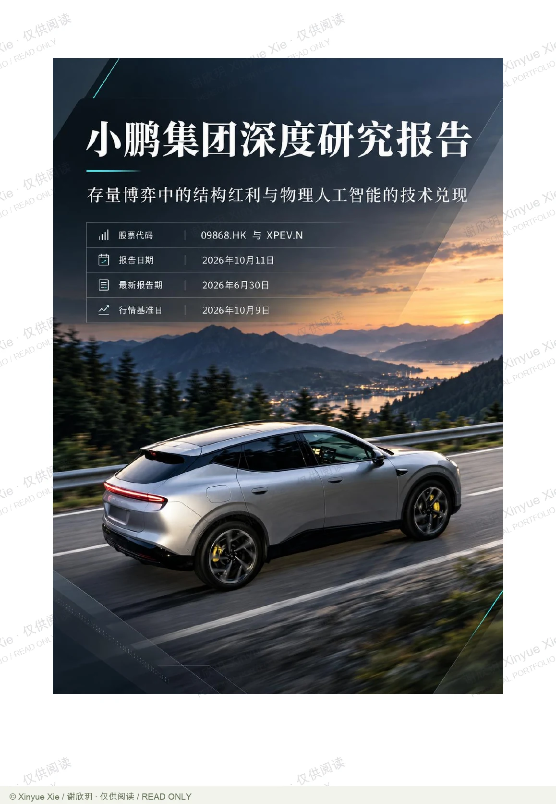

26-page report
01
Beyond the vehicle.XPENG / STRUCTURAL OPPORTUNITIES
内容速览 / 01
小鹏汽车：超越整车的价值
把技术、销量、利润和现金流分开检验，才能判断哪些增长真正属于股东。
小鹏汽车：超越整车的价值↗
把技术、销量、利润和现金流分开检验，才能判断哪些增长真正属于股东。
展开核心逻辑
- 01产业与产品
从行业需求和产品位置开始，区分销量的短期驱动与技术能力的长期兑现，避免把技术领先直接等同于商业成功。
- 02利润质量
拆开利润来源，检查整车与高毛利技术服务各自的贡献，以及项目收入能否持续。
- 03商业化与权益
对新业务分别判断商业化、资金需求和实际权益，不把技术共用理解成商业化同步，也不直接把全部业务估值相加。
- 04现金流与估值
以一致的口径连接经营假设、现金流和分部估值，最后列出需要持续跟踪的验证条件。
公司研究 · 26 页
小鹏汽车：超越整车的价值
小鹏的研究不能停留在技术领先或销量增长上。我把整车业务、技术服务和新业务分别放回各自的盈利与现金流条件中分析：整车需要检验产品结构和毛利率，技术服务需要区分项目收入与可持续收入，机器人等新业务则需要核对商业化阶段、实际持股与融资稀释。估值部分用现金流模型和分业务估值相互核对，关注技术优势在什么条件下才能转化为上市公司股东可获得的价值。
- 01产业与产品
从行业需求和产品位置开始，区分销量的短期驱动与技术能力的长期兑现，避免把技术领先直接等同于商业成功。
- 02利润质量
拆开利润来源，检查整车与高毛利技术服务各自的贡献，以及项目收入能否持续。
- 03商业化与权益
对新业务分别判断商业化、资金需求和实际权益，不把技术共用理解成商业化同步，也不直接把全部业务估值相加。
- 04现金流与估值
以一致的口径连接经营假设、现金流和分部估值，最后列出需要持续跟踪的验证条件。
